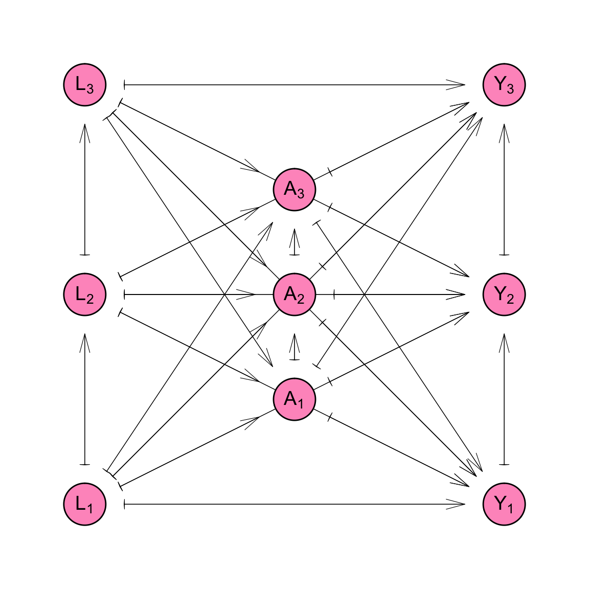
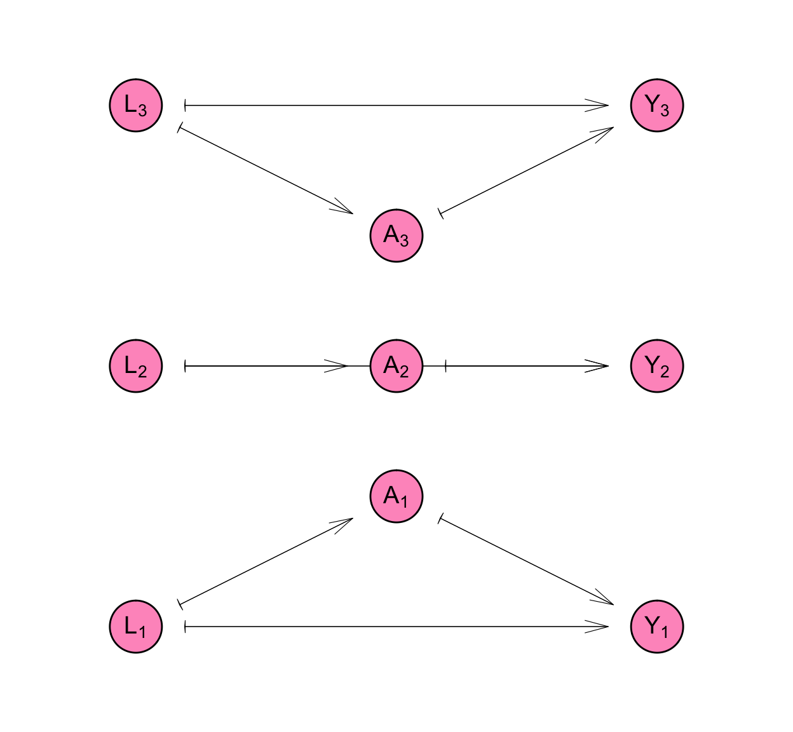
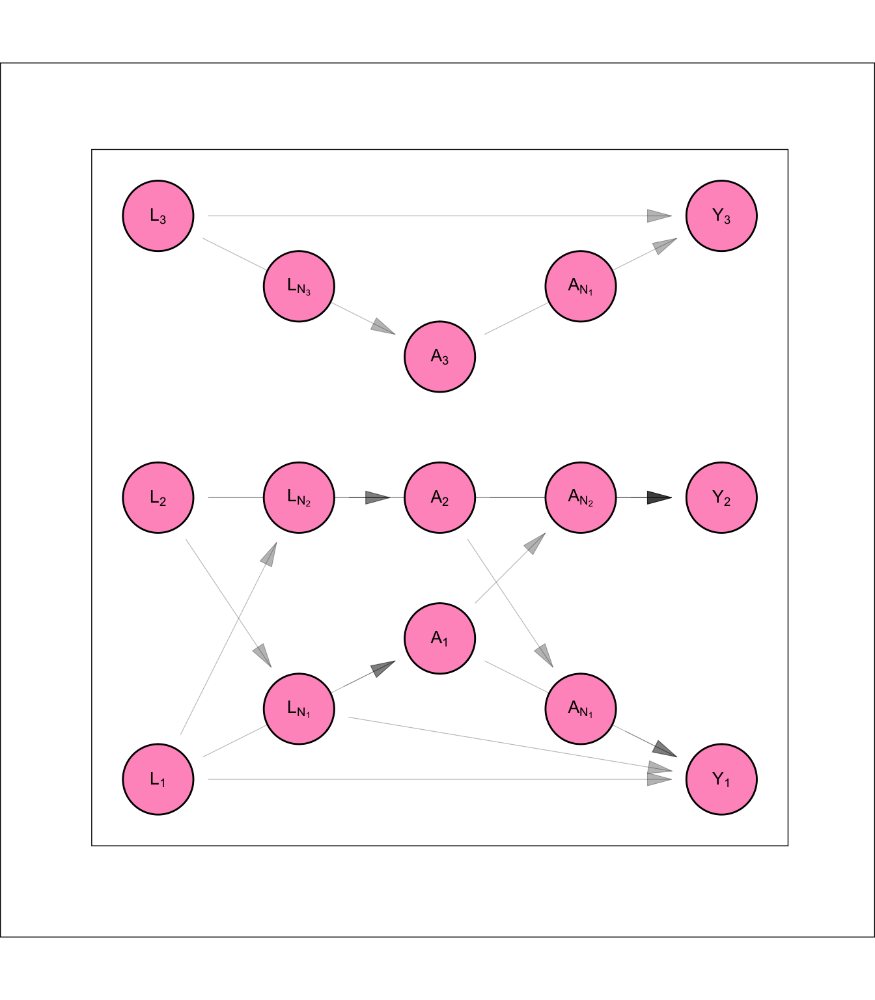
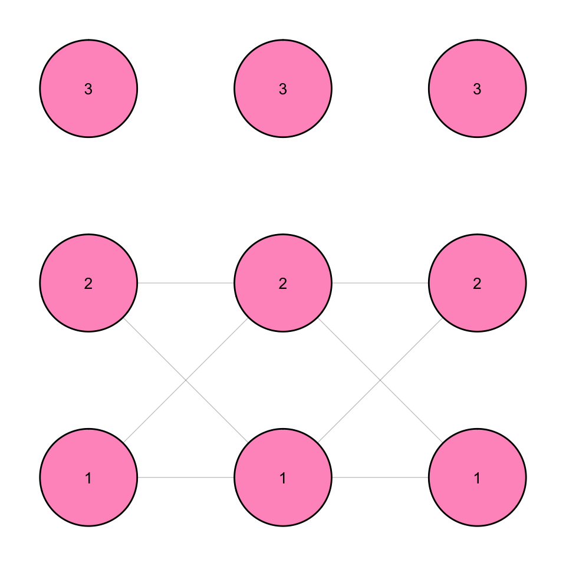
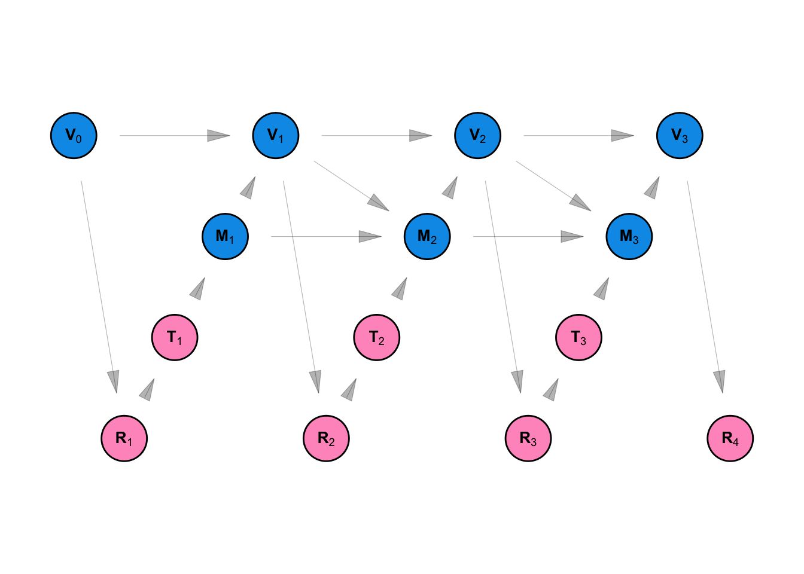
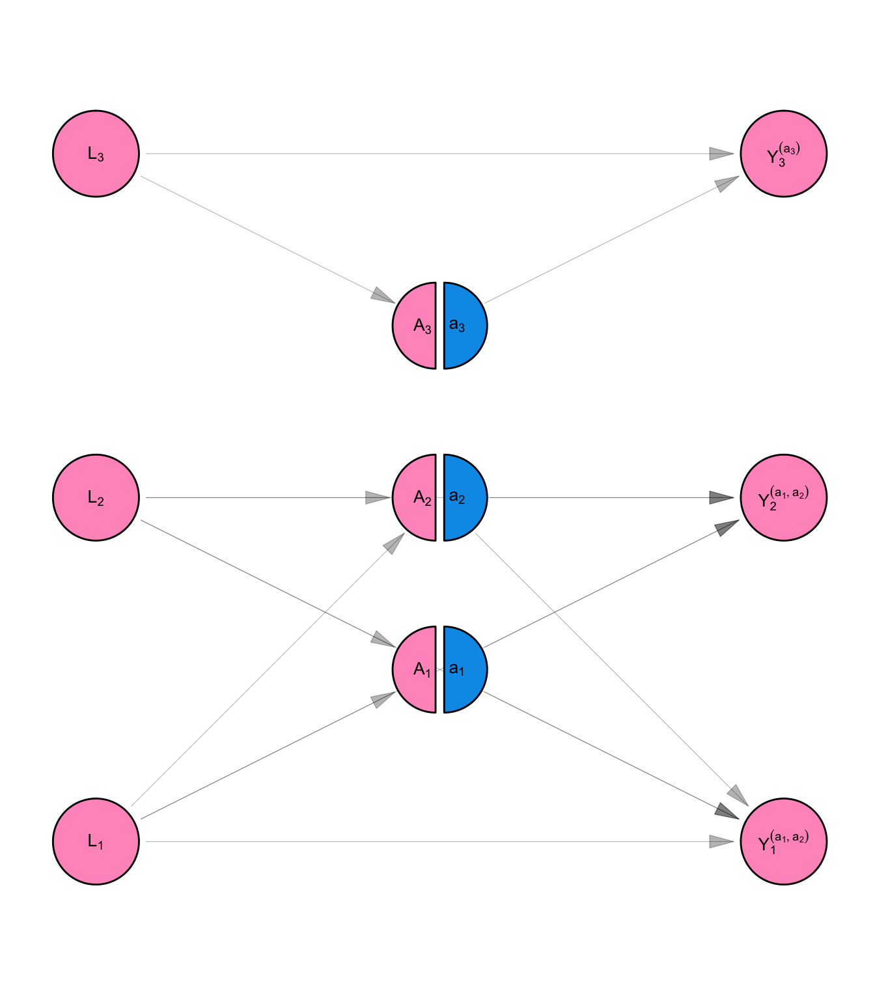
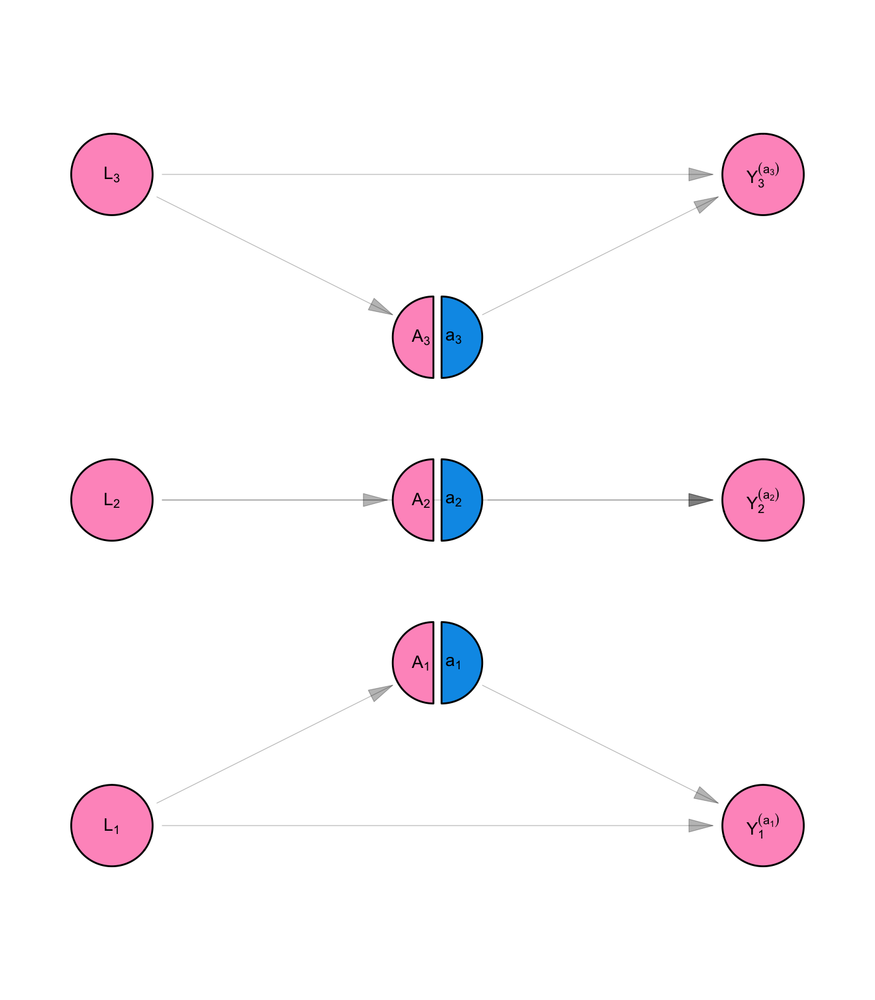

Code
# Access custom defined functions
targets::tar_source("../R_functions")# Access custom defined functions
targets::tar_source("../R_functions")# Access custom defined functions
targets::tar_source("../R_functions")The goals of this appendix are to motivate the usefulness of the SSNAC framework by (i) describing the prevailing system for thinking about data and causality in the field of epidemiology and, (ii) Contrasting it with the system for causal interpretation advocated by the SSNAC framework.
The prevailing system for causality (as articulated in (Robins 1986; Hernán and Robins 2018)) helps us to sharpen epidemiologic reasoning by providing a template for conducting thought experiments about population health and providing a framework for using observable data to predict the outcomes of our thought experiments.
For instance, imagine we allowed every person in the united states free, unlimited access to healthcare. Under this system, we could ask how the prevalence of diabetes would change if we did that. The system allows us to estimate the degree of change using data that have already been observed. It does this by making assumptions about some aspects of the causal system which links access to healthcare with changes in diabetes prevalence, and modelling other aspects. Crucially, it provides a way to incorporate evidence from observed data in the model.
In summary, the prevailing system for causality both provides a template for us to use in generating thought experiments that can be examined using data, and a framework for using data to calculate quantities that would arise under different conditions of the thought experiments.
One of the crucial assumptions almost universally made by this system is that of independence between observational units - i.e. that the characteristics or health outcomes of behaviors of one person in the study sample are not affected by those of any other person. In our example, this would be the assumption that (for instance), one person’s access to healthcare does not affect any other person’s diabetes risk. It would imply that the diabetes risk for married men who do not cook, would not be affected by the health education their wives might receive if they had access to healthcare.
The assumption of independence runs counter to our intuition about social life. Humans are social creatures - our lives are defined by our relationships with others. That is why there was a need for the effort that produced this research report. Yet most epidemiologic studies, including randomized trials, operate under the assumption that the individuals under study are not affected by their relationships with others.
The SSNAC helps to expand our toolbox by acknowledging that relationships powerfully shape health. As we describe below, we do so by making a different assumption than the one of independence. This assumption allows us to use much of the statistical machinery developed for the setting where observational units are assumed to be independent.
The rest of the appendix is structured using the analogy commonly used by causal inference specialists to make sense of the statistical frameowrk - the randomized trial. We assume that nature is in the business of conducting randomized trials where it is assigning the treatment of interest on the basis of some observed characteristics. In the section on observed data, we understand observed data as the result of the randomized trial nature ran. Following that, in the section on counterfactual data, we create a different model which shows what would happen if we got to assign the treatment of interest the way we want, not the way that nature did it. In the section on causal estimands, we define an outcome measure we are interested in using to assess the different between different treatment assignments, finally in the section on identification and estimation, we figure out how to calculate that outcome measure in terms of the observed data.
# Access custom defined functions
targets::tar_source("../R_functions")make_swig <- function(graph_type){
graph_nodes_list <- list()
graph_nodes_list <- append(graph_nodes_list, list(data.frame(name = "L1", label = r"($L_1$)" , x = 1, y = 1, homogenous = FALSE, node_shape = "covariate")))
graph_nodes_list <- append(graph_nodes_list, list(data.frame(name = "L2", label = r"($L_2$)" , x = 1, y = 3, homogenous = FALSE, node_shape = "covariate")))
graph_nodes_list <- append(graph_nodes_list, list(data.frame(name = "L3", label = r"($L_3$)" , x = 1, y = 5, homogenous = FALSE, node_shape = "covariate")))
graph_nodes_list <- append(graph_nodes_list, list(data.frame(name = "A1", label = r"($A_1$)" , x = 3, y = 2, homogenous = FALSE, node_shape = "preintervention")))
graph_nodes_list <- append(graph_nodes_list, list(data.frame(name = "A2", label = r"($A_2$)" , x = 3, y = 3, homogenous = FALSE, node_shape = "preintervention")))
graph_nodes_list <- append(graph_nodes_list, list(data.frame(name = "A3", label = r"($A_3$)" , x = 3, y = 4, homogenous = FALSE, node_shape = "preintervention")))
graph_nodes_list <- append(graph_nodes_list, list(data.frame(name = "a1", label = r"($a_1$)" , x = 3, y = 2, homogenous = FALSE, node_shape = "intervention")))
graph_nodes_list <- append(graph_nodes_list, list(data.frame(name = "a2", label = r"($a_2$)" , x = 3, y = 3, homogenous = FALSE, node_shape = "intervention")))
graph_nodes_list <- append(graph_nodes_list, list(data.frame(name = "a3", label = r"($a_3$)" , x = 3, y = 4, homogenous = FALSE, node_shape = "intervention")))
graph_nodes_list <- append(graph_nodes_list, list(data.frame(name = "LNet1", label = r"($L_{N_1}$)" , x = 2, y = 1.5, homogenous = TRUE , node_shape = "covariate")))
graph_nodes_list <- append(graph_nodes_list, list(data.frame(name = "LNet2", label = r"($L_{N_2}$)" , x = 2, y = 3, homogenous = TRUE , node_shape = "covariate")))
graph_nodes_list <- append(graph_nodes_list, list(data.frame(name = "LNet3", label = r"($L_{N_3}$)" , x = 2, y = 4.5, homogenous = TRUE , node_shape = "covariate")))
graph_nodes_list <- append(graph_nodes_list, list(data.frame(name = "ANet1", label = r"($A_{N_1}$)" , x = 4, y = 1.5, homogenous = TRUE , node_shape = "covariate")))
graph_nodes_list <- append(graph_nodes_list, list(data.frame(name = "ANet2", label = r"($A_{N_2} $)" , x = 4, y = 3, homogenous = TRUE , node_shape = "covariate")))
graph_nodes_list <- append(graph_nodes_list, list(data.frame(name = "ANet3", label = r"($A_{N_1} $)" , x = 4, y = 4.5, homogenous = TRUE , node_shape = "covariate")))
if (graph_type == "independence"){
graph_nodes_list <- append(graph_nodes_list, list(data.frame(name = "Y1", label = r"($Y_1^{(a_1)}$)" , x = 5, y = 1, homogenous = FALSE, node_shape = "covariate")))
graph_nodes_list <- append(graph_nodes_list, list(data.frame(name = "Y2", label = r"($Y_2^{(a_2)}$)" , x = 5, y = 3, homogenous = FALSE, node_shape = "covariate")))
graph_nodes_list <- append(graph_nodes_list, list(data.frame(name = "Y3", label = r"($Y_3^{(a_3)}$)" , x = 5, y = 5, homogenous = FALSE, node_shape = "covariate")))
}
if (graph_type == "network_interference"){
graph_nodes_list <- append(graph_nodes_list, list(data.frame(name = "Y1", label = r"($Y_1^{(a_1, a_2)}$)" , x = 5, y = 1, homogenous = FALSE, node_shape = "covariate")))
graph_nodes_list <- append(graph_nodes_list, list(data.frame(name = "Y2", label = r"($Y_2^{(a_1, a_2)}$)" , x = 5, y = 3, homogenous = FALSE, node_shape = "covariate")))
graph_nodes_list <- append(graph_nodes_list, list(data.frame(name = "Y3", label = r"($Y_3^{(a_3)}$)" , x = 5, y = 5, homogenous = FALSE, node_shape = "covariate")))
}
graph_nodes <- graph_nodes_list |>
dplyr::bind_rows() |>
dplyr::mutate(node_radius = 0.2) |>
dplyr::mutate(label = latex2exp::TeX(label, output = "character")) |>
dplyr::mutate(node_type = node_shape) |>
dplyr::mutate(node_type = ifelse(node_shape == "preintervention", "covariate", node_shape))
graph_edges_list <- list()
graph_edges_list[["independence"]] <- data.frame(
from = c("L1", "L2", "L3", "L1", "L2", "L3", "a1", "a2", "a3"),
to = c("A1", "A2", "A3", "Y1", "Y2", "Y3", "Y1", "Y2", "Y3")
)
graph_edges_list[["network_interference"]] <- data.frame(
from = c("L1", "L2", "L1", "L2", "a1", "a2"),
to = c("A2", "A1", "Y2", "Y1", "Y2", "Y1")
) |>
rbind(graph_edges_list[["independence"]] )
graph_edges_list[["full_interference"]] <- data.frame(
from = c("L1", "L3", "L1", "L3", "a1", "a3",
"L2", "L3", "L2", "L3", "a2", "a3"),
to = c("A3", "A1", "Y3", "Y1", "Y3", "Y1",
"A3", "A2", "Y3", "Y2", "Y3", "Y2")) |>
rbind(graph_edges_list[["network_interference"]] )
graph_edges_list[["fully_connected"]] <- data.frame(
from = c("L1", "a1", "Y1"),
to = c("L2", "A2", "Y2")
) |>
rbind(graph_edges_list[["full_interference"]] )
graph_edges_list[["homogenous_interference"]] <- data.frame(
from = c("L1" , "L2" , "a1" , "a2" , "LNet2", "LNet1", "LNet2", "LNet1", "ANet2", "ANet1"),
to = c("LNet2", "LNet1", "ANet2", "ANet1", "A2" , "A1" , "Y2" , "Y1" , "Y2" , "Y1" )) |>
rbind(graph_edges_list[["independence"]])
graph_edges <- graph_edges_list[[graph_type]]
if (graph_type != "homogenous_interference") {
graph_nodes <- graph_nodes |>
dplyr::filter(!homogenous)
}
tidygraph::tbl_graph(nodes = graph_nodes, edges = graph_edges)
}make_dag <- function(graph_type){
graph_nodes_list <- list()
graph_nodes_list <- append(graph_nodes_list, list(data.frame(name = "L1", label = r"($L_1$)" , x = 1, y = 1, homogenous = FALSE, node_shape = "covariate")))
graph_nodes_list <- append(graph_nodes_list, list(data.frame(name = "L2", label = r"($L_2$)" , x = 1, y = 3, homogenous = FALSE, node_shape = "covariate")))
graph_nodes_list <- append(graph_nodes_list, list(data.frame(name = "L3", label = r"($L_3$)" , x = 1, y = 5, homogenous = FALSE, node_shape = "covariate")))
graph_nodes_list <- append(graph_nodes_list, list(data.frame(name = "A1", label = r"($A_1$)" , x = 3, y = 2, homogenous = FALSE, node_shape = "covariate")))
graph_nodes_list <- append(graph_nodes_list, list(data.frame(name = "A2", label = r"($A_2$)" , x = 3, y = 3, homogenous = FALSE, node_shape = "covariate")))
graph_nodes_list <- append(graph_nodes_list, list(data.frame(name = "A3", label = r"($A_3$)" , x = 3, y = 4, homogenous = FALSE, node_shape = "covariate")))
graph_nodes_list <- append(graph_nodes_list, list(data.frame(name = "Y1", label = r"($Y_1$)" , x = 5, y = 1, homogenous = FALSE, node_shape = "covariate")))
graph_nodes_list <- append(graph_nodes_list, list(data.frame(name = "Y2", label = r"($Y_2$)" , x = 5, y = 3, homogenous = FALSE, node_shape = "covariate")))
graph_nodes_list <- append(graph_nodes_list, list(data.frame(name = "Y3", label = r"($Y_3$)" , x = 5, y = 5, homogenous = FALSE, node_shape = "covariate")))
graph_nodes_list <- append(graph_nodes_list, list(data.frame(name = "LNet1", label = r"($L_{N_1}$)" , x = 2, y = 1.5, homogenous = TRUE , node_shape = "covariate")))
graph_nodes_list <- append(graph_nodes_list, list(data.frame(name = "LNet2", label = r"($L_{N_2}$)" , x = 2, y = 3, homogenous = TRUE , node_shape = "covariate")))
graph_nodes_list <- append(graph_nodes_list, list(data.frame(name = "LNet3", label = r"($L_{N_3}$)" , x = 2, y = 4.5, homogenous = TRUE , node_shape = "covariate")))
graph_nodes_list <- append(graph_nodes_list, list(data.frame(name = "ANet1", label = r"($A_{N_1}$)" , x = 4, y = 1.5, homogenous = TRUE , node_shape = "covariate")))
graph_nodes_list <- append(graph_nodes_list, list(data.frame(name = "ANet2", label = r"($A_{N_2} $)" , x = 4, y = 3, homogenous = TRUE , node_shape = "covariate")))
graph_nodes_list <- append(graph_nodes_list, list(data.frame(name = "ANet3", label = r"($A_{N_1} $)" , x = 4, y = 4.5, homogenous = TRUE , node_shape = "covariate")))
graph_nodes <- graph_nodes_list |>
dplyr::bind_rows() |>
dplyr::mutate(node_radius = 0.2) |>
dplyr::mutate(label = latex2exp::TeX(label, output = "character")) |>
dplyr::mutate(node_type = node_shape) |>
dplyr::mutate(node_type = ifelse(node_shape == "preintervention", "covariate", node_shape))
graph_edges_list <- list()
graph_edges_list[["independence"]] <- data.frame(
from = c("L1", "L2", "L3", "L1", "L2", "L3", "A1", "A2", "A3"),
to = c("A1", "A2", "A3", "Y1", "Y2", "Y3", "Y1", "Y2", "Y3")
)
graph_edges_list[["network_interference"]] <- data.frame(
from = c("L1", "L2", "L1", "L2", "A1", "A2"),
to = c("A2", "A1", "Y2", "Y1", "Y2", "Y1")
) |>
rbind(graph_edges_list[["independence"]] )
graph_edges_list[["full_interference"]] <- data.frame(
from = c("L1", "L3", "L1", "L3", "A1", "A3",
"L2", "L3", "L2", "L3", "A2", "A3"),
to = c("A3", "A1", "Y3", "Y1", "Y3", "Y1",
"A3", "A2", "Y3", "Y2", "Y3", "Y2")) |>
rbind(graph_edges_list[["network_interference"]] )
graph_edges_list[["fully_connected"]] <- data.frame(
from = c("L1", "A1", "Y1", "L2", "A2", "Y2"),
to = c("L2", "A2", "Y2", "L3", "A3", "Y3")
) |>
rbind(graph_edges_list[["full_interference"]] )
graph_edges_list[["homogenous_interference"]] <- data.frame(
from = c("L1" , "L2" , "A1" , "A2" , "LNet2", "LNet1", "LNet2", "LNet1", "ANet2", "ANet1"),
to = c("LNet2", "LNet1", "ANet2", "ANet1", "A2" , "A1" , "Y2" , "Y1" , "Y2" , "Y1" )) |>
rbind(graph_edges_list[["independence"]])
graph_edges <- graph_edges_list[[graph_type]]
if (graph_type != "homogenous_interference") {
graph_nodes <- graph_nodes |>
dplyr::filter(!homogenous)
}
tidygraph::tbl_graph(nodes = graph_nodes, edges = graph_edges)
}plot_swig <- function(data, arrow_length_head = 0.2, arrow_length_tail = 0.05, edge_width = 0.2, node_radius = 0.3, node_margin = 0.4, nudge_intervention_labels = 0.1){
variable_names <- data |>
tidygraph::activate(edges) |>
data.frame() |>
names()
analysis_data <- data
edge_label_exists <-"edge_label" %in% variable_names
if (!edge_label_exists) {
analysis_data <- data |>
tidygraph::activate(edges) |>
tidygraph::mutate(edge_label = "") |>
tidygraph::activate(nodes)
} else {
analysis_data <- data
}
node_characteristics <- analysis_data |>
data.frame()
ggraph::create_layout(analysis_data, data.frame(analysis_data)) |>
ggraph::ggraph(analysis_data) +
ggraph::geom_edge_link(
mapping = ggplot2::aes(
label = latex2exp::TeX(edge_label, output = "character")
),
arrow = grid::arrow(
angle = 15,
length = ggplot2::unit(arrow_length_head, "inches"),
ends = "last",
type = "closed"
),
end_cap = ggraph::circle(node_margin, 'inches'),
start_cap = ggraph::circle(node_margin, 'inches'),
edge_width = edge_width,
label_size = 8,
edge_alpha = 0.3
) +
ggforce::geom_arc_bar(
mapping = ggplot2::aes(x0 = x, y0 = y, r = node_radius + 0.05, fill = node_type, start = 0, end = 1*pi, r0 = 0),
data = node_characteristics |> dplyr::filter(node_shape == "intervention"),
position = ggplot2::position_nudge(x = 0.25 * nudge_intervention_labels)
) +
ggforce::geom_arc_bar(
mapping = ggplot2::aes(x0 = x, y0 = y, r = node_radius + 0.05, fill = node_type, start = pi, end = 2*pi, r0 = 0),
data = node_characteristics |> dplyr::filter(node_shape == "preintervention"),
position = ggplot2::position_nudge(x = - 0.25 * nudge_intervention_labels)
) +
ggforce::geom_circle(
mapping = ggplot2::aes(x0 = x, y0 = y, r = node_radius + 0.05, fill = node_type), data = node_characteristics |> dplyr::filter(node_shape == "covariate")
) +
ggraph::geom_node_text(
mapping = ggplot2::aes(label = label, fill = node_type),
color = "black",
size = 3.5,
parse = TRUE,
data = node_characteristics |> dplyr::filter(node_shape == "preintervention"),
nudge_x = -nudge_intervention_labels
) +
ggraph::geom_node_text(
mapping = ggplot2::aes(label = label, fill = node_type),
color = "black",
size = 3.5,
parse = TRUE,
data = node_characteristics |> dplyr::filter(node_shape == "intervention"),
nudge_x = nudge_intervention_labels
) +
ggraph::geom_node_text(
mapping = ggplot2::aes(label = label, fill = node_type),
color = "black",
size = 3.5,
parse = TRUE,
data = node_characteristics |> dplyr::filter(node_shape == "covariate")
) +
ggplot2::theme_void() +
ggplot2::theme(
legend.position = "none",
plot.margin = ggplot2::margin(20, 20, 20, 20)
) +
ggplot2::coord_fixed()
}# Access custom defined functions
targets::tar_source("../R_functions")We are interested in settling an argument about the relationship between dressing in formal wear and job opportunities. One friend thinks that dressing formally clearly brings more job opportunities. Everyone they know who dressed formally she has seen, has many more opportunities than people who dress casually. The other friend thinks that what really brings job opportunities is currently having a job. In their reasoning, having a job causes people to dress formally and causes people to have job opprotunities, but dressing formally does not in itself improve one’s opportunities.
We conduct a study to try and understand this question. We recruit three people, Person 1, Person 2, and Person 3. Person 1 and Person 2 are married to each other. Person 1 and Person 3 are newly acquainted colleagues. Say Person 1 has job status \(L_1\), Person 2 has job status \(L_2\) and Person 3 has job status \(L_3\). Each of these variables can only take on two values: “employed vs. unemployed”. Similarly we define \(A_i\) as Person i’s dress (formal vs. informal), and \(Y_i\) as their job opportunities (high vs. low). The job status measurement precedes \(L_i\) dress \(A_i\) in time, and dress precedes job opportunities \(Y_i\).
make_dag("fully_connected") |> plot_swig(node_radius = 0.2) + scale_fill_mpxnyc(option = "light")
\[ \begin{aligned} L_1 &= f_{L_1}(U_{L_1}) \\ L_2 &= f_{L_2}(U_{L_2}, L_1) \\ L_3 &= f_{L_3}(U_{L_3}, L_1, L_2 ) \\ A_1 &= f_{A_1}(U_{A_1}, L_1, L_2, L_3) \\ A_2 &= f_{A_2}(U_{A_2}, L_1, L_2, L_3, A_1) \\ A_3 &= f_{A_3}(U_{A_3}, L_1, L_2, L_3, A_1, A_2) \\ Y_1 &= f_{Y_1}(U_{Y_1}, L_1, L_2, L_3, A_1, A_2, A_3) \\ Y_2 &= f_{Y_2}(U_{Y_2}, L_1, L_2, L_3, A_1, A_2, A_3, Y_1) \\ Y_3 &= f_{Y_3}(U_{Y_3}, L_1, L_2, L_3, A_1, A_2, A_3, Y_1, Y_2) \\ \end{aligned} \tag{D.1}\]
We can make a model for how each of these people’s measures. If we made no assumptions at all about the causal process, except the time-ordering of measurements, we can represent this model using Equation D.1. This model is visualized as a causal Directed Acyclic Graph (DAG) in Figure D.1. Since there are no missing edges between nodes in the DAG, the structural equation model represents any possible joint distribution between the variables in the DAG. This is the most flexible model.
But the most flexible model is not the most useful one. To fully characterize this system, we would need to estimate 9 functions using one observation of the 9-dimensional joint distribution that gave rise to the three participant’s observations. Epidemiologists take several approaches to improve the ability to understand the system is to simplify it.
In the first sub-section below, we show how standard assumptions made in classic causal inference narrow down the set of distributions that can be represented by the model. We do the same thing for assumptions made in network causal inference and in the SSNAC framework.
Under classic causal inference, we make the assumption of no spillover - that measurements taken across participants at the same time (e.g. \(L_1\), \(L_2\), and \(L_3\)). In Figure D.2, the arrows that connected the \(L_i\)’s, \(A_i\)’s and \(Y_i\)’s, respectively have been removed. Note that this is shown in Equation D.2. \(L_2\) is no longer a function of \(L_1\), for instance. In general, the \(L_i\)’s are not functions of each other, the \(A_i\)’s are not functions of each other, and the \(Y_i\)’s are not functions of each other. This implies that given all the measurements taken prior to a set of contemporaneous measures, the contemporaneous measures are independent.
make_dag("full_interference") |> plot_swig(node_radius = 0.2) + scale_fill_mpxnyc(option = "light")
\[ \begin{aligned} L_1 &= f_{L_1}(U_{L_1}) \\ L_2 &= f_{L_2}(U_{L_2}) \\ L_3 &= f_{L_3}(U_{L_3} ) \\ A_1 &= f_{A_1}(U_{A_1}, L_1, L_2, L_3) \\ A_2 &= f_{A_2}(U_{A_2}, L_1, L_2, L_3) \\ A_3 &= f_{A_3}(U_{A_3}, L_1, L_2, L_3) \\ Y_1 &= f_{Y_1}(U_{Y_1}, L_1, L_2, L_3, A_1, A_2, A_3) \\ Y_2 &= f_{Y_2}(U_{Y_2}, L_1, L_2, L_3, A_1, A_2, A_3) \\ Y_3 &= f_{Y_3}(U_{Y_3}, L_1, L_2, L_3, A_1, A_2, A_3) \\ \end{aligned} \tag{D.2}\]
In addition to the no spillover assumption, classic causal inference makes the no interference assumption. We assume tat measurements made across participants, but not at the same time are independent of each other. This is shown as the absence of arrows that connect \(L_i\)’s to \(A_j\)’s, \(L_i\)’s to \(Y_j\)’s and \(A_i\)’s to \(Y_j\) for \(i \neq j\)
make_dag("independence") |> plot_swig(node_radius = 0.2) + scale_fill_mpxnyc(option = "light")
This allows us to simplify the structural equation model so that each participants measures are a function of only measures taken on them. We make the distinction between spillover and interference because that distinction will be useful in the next section. However, by asserting that “observations are independent of each other”, we simultaneously assert no spillover and no intereference.
\[ \begin{aligned} L_1 &= f_{L_1}( U_{L_1}) \\ L_2 &= f_{L_2}( U_{L_2}) \\ L_3 &= f_{L_3}( U_{L_3}) \\ A_1 &= f_{A_1}( U_{A_1}, L_1) \\ A_2 &= f_{A_2}( U_{A_2}, L_2) \\ A_3 &= f_{A_3}( U_{A_3}, L_3) \\ Y_1 &= f_{Y_1}( U_{Y_1}, L_1, A_1 ) \\ Y_2 &= f_{Y_2}( U_{Y_2}, L_2, A_2 ) \\ Y_3 &= f_{Y_3}( U_{Y_3}, L_3, A_3 ) \\ \end{aligned} \tag{D.3}\]
Once we restrict the number of possible distributions that our system of equations can represent so that only measures within the individual influences that individual’s measures, we see that the functions that generate observations \(L_i\) are similar in structure to each other, as are the the functions that generate \(A_i\)’s and \(Y_i\)s.
We make the homogeneity assumption that the functions are identical to each other. i.e.
\[\begin{aligned} f_L &= f_{L_1} = f_{L_2} = f_{L_3} \\ f_A &= f_{A_1} = f_{A_2} = f_{A_3} \\ f_Y &= f_{Y_1} = f_{Y_2} = f_{Y_3} \\ \end{aligned}\]This allows us to re-write the structural equation model, dropping the person subscript, simplifying the structural equation model for three measures, each taken on three people, into a structural equation model for one person. This is useful because we actually observed three people, yet our model is for one person’s measures. Since the measures on each person are identically distributed, this model can be used three times to produce the measures for person 1, person 2, and person 3. The original model produced measures for all three people at one go.
\[\begin{aligned} L_i &= f_{L}( U_{L_i}) \\ A_i &= f_{A}( U_{A_i}, L_i) \\ Y_i &= f_{Y}( U_{Y_i}, L_i, A_i) \\ \end{aligned}\]# Access custom defined functions
targets::tar_source("../R_functions")See (Aronow and Samii 2017) for exposure mapping ideas.
Just as under classical causal inference, network causal inference as we articulate here, assumes no spillover. See figure [] and equations []. It is not necessary to make this restriction to work with network data. Makofane (2021) makes the assumption that contemporaneous measures are arise from conditional Markov Random Field models. We will elaborate a framework (SSNAC-Extension, or SSNACX) at a later stage. In brief, the difference between this articulation and that will be in estimation.
make_dag("network_interference") |> plot_swig(node_radius = 0.2) + scale_fill_mpxnyc(option = "light")
Conditioning on the meausres on i and the measures on nodes connecgted to i, contemporaneous measures are independent.
\[ \begin{aligned} L_1 &= f_{L_1}(U_{L_1}) \\ L_2 &= f_{L_2}(U_{L_2}) \\ L_3 &= f_{L_3}(U_{L_3} ) \\ A_1 &= f_{A_1}(U_{A_1}, L_1, L_2) \\ A_2 &= f_{A_2}(U_{A_2}, L_1, L_2) \\ A_3 &= f_{A_3}(U_{A_3}, L_3) \\ Y_1 &= f_{Y_1}(U_{Y_1}, L_1, L_2, A_1, A_2) \\ Y_2 &= f_{Y_2}(U_{Y_2}, L_1, L_2, A_1, A_2) \\ Y_3 &= f_{Y_3}(U_{Y_3}, L_3, A_3) \\ \end{aligned} \tag{D.4}\]
make_dag("homogenous_interference") |> plot_swig(node_radius = 0.2) + scale_fill_mpxnyc(option = "light")
The identical distribution assumption asserts that each person’s measures (though they are not independent from one another) arise from the same structural equation model. i.e.:
In notation:
\[\begin{aligned} f_{A_1} &= f_{A_2} = f_{A_3} \\ f_{Y_1} &= g_{Y_2} = f_{Y_3} \\ f_{Y_1} &= f_{Y_2} = f_{Y_3} \\ \end{aligned}\]This assumption implies that:
\[\begin{aligned} g_{A_1} &= g_{A_2} = g_{A_3} \\ g_{Y_1} &= g_{Y_2} = g_{Y_3} \\ g_{Y_1} &= g_{Y_2} = g_{Y_3} \\ \end{aligned}\]since the each function \(f_*\) depends on the value of the function \(g_*\).
This allows us to re-write the model like this:
We assume that the order of the entries in the input of functions \(g_*\) and \(h_*\) does not matter. i.e. these functions are invariant under permutation of the entries in the input vector.
\[ g(\mathbf{l}) = g(\mathbf{m}) \text{ for } \mathbf{l} \text{ permutation of } \mathbf{m} \]
We can re-write the model like this:
\[ \begin{aligned} L_i &= f_{L}( U_{L_i} ) \\ A_i &= f_{A}( U_{A_i}, L_i, g_{A}(\textbf{L}_{N_i}) ) \\ Y_i &= f_{Y}( U_{Y_i}, L_i, g_{Y}(\textbf{L}_{N_i}), A_i, h_{Y}(\textbf{L}_{N_i}, \textbf{A}_{N_i} ) ) \\ \end{aligned} \tag{D.5}\]
# Access custom defined functions
targets::tar_source("../R_functions")structural_nodes <- data.frame(
name = c("L", "A", "Y"),
label = c(r"($L_{3 \times 1}$)", r"($A_{3 \times 1})", r"($Y_{3 \times 1}$)") |> latex2exp::TeX(output = "character", bold = TRUE),
x = c(1, 2, 3),
y = c(2, 1, 1),
node_type = "person",
node_shape = "covariate"
)
structural_edges <- data.frame(
from = c("L", "A", "L"),
to = c("A", "Y", "Y")
)
network_nodes <- data.frame(
name = c("11", "12", "13", "21", "22", "23", "31", "32", "33"),
label = c("1", "2", "3", "1", "2", "3", "1", "2", "3"),
x = c( 1, 1, 1, 2, 2, 2, 3, 3, 3),
y = c(1, 2, 3, 1, 2, 3, 1, 2, 3),
node_type = c("Person", "Person", "Person", "Person", "Person", "Person", "Person", "Person", "Person"),
node_shape = "covariate"
)
network_edges <- data.frame(
from = c("11", "21", "31", "32", "11", "12", "21", "22"),
to = c("22", "12", "22", "21", "21", "22", "31", "32")
)
tidygraph::tbl_graph(nodes = structural_nodes, edges = structural_edges) |>
plot_swig(node_radius = 0.2) +
ggplot2::theme(
plot.margin = ggplot2::margin(10, 10, 10, 10),
legend.position = "none"
) +
scale_fill_mpxnyc(option = "light")

structural_nodes <- data.frame(
name = c("C", "A", "Y"),
label = c(r"($T_{3 \times 1}$)", r"($M_{5 \times 1})", r"($V_{5 \times 1}$)") |> latex2exp::TeX(output = "character", bold = TRUE),
x = c(1, 2, 3),
y = c(1, 1, 1),
node_type = c("Community", "Individual", "Individual"),
node_shape = "covariate"
)
structural_edges <- data.frame(
from = c("C", "A"),
to = c("A", "Y")
)
network_nodes <- data.frame(
name = c("1A", "1B", "1C", "21", "22", "23", "24", "25", "31", "32", "33", "34", "35"),
label = c("A", "B", "C", "1", "2", "3", "4", "5", "1", "2", "3", "4", "5"),
x = c( 1, 1, 1, 2, 2, 2, 2, 2, 3, 3, 3, 3, 3),
y = c(1, 2, 3, 1, 2, 3, 4, 5, 1, 2, 3, 4, 5),
node_type = c(rep("Community", 3), rep("Individual", 5), rep("Individual", 5)),
node_shape = "covariate"
)
network_edges <- data.frame(
from = c("1A", "1B", "1B", "1C", "1C", "1C", "1A", "1B", "1C", "22", "21", "23", "23", "24", "25"),
to = c("22", "21", "23", "23", "24", "25", "21", "22", "22", "32", "31", "33", "33", "34", "35")
)
tidygraph::tbl_graph(nodes = structural_nodes, edges = structural_edges) |>
plot_swig(node_radius = 0.15) +
ggplot2::theme(
plot.margin = ggplot2::margin(10, 10, 10, 10),
legend.position = "none"
) +
scale_fill_mpxnyc(option = "light")
list_nodes <- list()
list_nodes[[length(list_nodes) + 1]] <- data.frame(name = "V0", label = r"($V_{0}$)", x = 1, y = 8, node_type = "Individual")
list_nodes[[length(list_nodes) + 1]] <- data.frame(name = "R1", label = r"($R_{1}$)", x = 2, y = 2, node_type = "Community")
list_nodes[[length(list_nodes) + 1]] <- data.frame(name = "T1", label = r"($T_{1}$)", x = 3, y = 4, node_type = "Community")
list_nodes[[length(list_nodes) + 1]] <- data.frame(name = "M1", label = r"($M_{1}$)", x = 4, y = 6, node_type = "Individual")
list_nodes[[length(list_nodes) + 1]] <- data.frame(name = "V1", label = r"($V_{1}$)", x = 5, y = 8, node_type = "Individual")
list_nodes[[length(list_nodes) + 1]] <- data.frame(name = "R2", label = r"($R_{2}$)", x = 6, y = 2, node_type = "Community")
list_nodes[[length(list_nodes) + 1]] <- data.frame(name = "T2", label = r"($T_{2}$)", x = 7, y = 4, node_type = "Community")
list_nodes[[length(list_nodes) + 1]] <- data.frame(name = "M2", label = r"($M_{2}$)", x = 8, y = 6, node_type = "Individual")
list_nodes[[length(list_nodes) + 1]] <- data.frame(name = "V2", label = r"($V_{2}$)", x = 9, y = 8, node_type = "Individual")
list_nodes[[length(list_nodes) + 1]] <- data.frame(name = "R3", label = r"($R_{3}$)", x = 10, y = 2, node_type = "Community")
list_nodes[[length(list_nodes) + 1]] <- data.frame(name = "T3", label = r"($T_{3}$)", x = 11, y = 4, node_type = "Community")
list_nodes[[length(list_nodes) + 1]] <- data.frame(name = "M3", label = r"($M_{3}$)", x = 12, y = 6, node_type = "Individual")
list_nodes[[length(list_nodes) + 1]] <- data.frame(name = "V3", label = r"($V_{3}$)", x = 13, y = 8, node_type = "Individual")
list_nodes[[length(list_nodes) + 1]] <- data.frame(name = "R4", label = r"($R_{4}$)", x = 14, y = 2, node_type = "Community")
list_edges <- list()
list_edges[[length(list_edges) + 1]] <- data.frame(from = "V0", to = "R1")
list_edges[[length(list_edges) + 1]] <- data.frame(from = "R1", to = "T1")
list_edges[[length(list_edges) + 1]] <- data.frame(from = "T1", to = "M1")
list_edges[[length(list_edges) + 1]] <- data.frame(from = "M1", to = "V1")
list_edges[[length(list_edges) + 1]] <- data.frame(from = "R2", to = "T2")
list_edges[[length(list_edges) + 1]] <- data.frame(from = "T2", to = "M2")
list_edges[[length(list_edges) + 1]] <- data.frame(from = "M2", to = "V2")
list_edges[[length(list_edges) + 1]] <- data.frame(from = "R3", to = "T3")
list_edges[[length(list_edges) + 1]] <- data.frame(from = "T3", to = "M3")
list_edges[[length(list_edges) + 1]] <- data.frame(from = "M3", to = "V3")
list_edges[[length(list_edges) + 1]] <- data.frame(from = "V1", to = "R2")
list_edges[[length(list_edges) + 1]] <- data.frame(from = "V2", to = "R3")
list_edges[[length(list_edges) + 1]] <- data.frame(from = "M1", to = "M2")
list_edges[[length(list_edges) + 1]] <- data.frame(from = "M2", to = "M3")
list_edges[[length(list_edges) + 1]] <- data.frame(from = "V1", to = "M2")
list_edges[[length(list_edges) + 1]] <- data.frame(from = "V2", to = "M3")
list_edges[[length(list_edges) + 1]] <- data.frame(from = "V3", to = "R4")
list_edges[[length(list_edges) + 1]] <- data.frame(from = "V0", to = "V1")
list_edges[[length(list_edges) + 1]] <- data.frame(from = "V1", to = "V2")
list_edges[[length(list_edges) + 1]] <- data.frame(from = "V2", to = "V3")
structural_nodes <- list_nodes |>
dplyr::bind_rows() |>
dplyr::mutate(label = latex2exp::TeX(label, output = "character", bold = TRUE)) |>
dplyr::mutate(node_shape = "covariate")
structural_edges <- list_edges |> dplyr::bind_rows()
tidygraph::tbl_graph(nodes = structural_nodes, edges = structural_edges) |>
plot_swig(node_radius = 0.4) +
ggplot2::theme(
plot.margin = ggplot2::margin(10, 10, 10, 10),
legend.position = "none"
) +
scale_fill_mpxnyc(option = "light")
network_nodes_0 <- data.frame(
name = c("01", "02", "03", "04", "05"),
label = c("1", "2", "3", "4", "5"),
x = c( 0,0,0,0,0),
y = c(1,2,3,4,5),
node_type = rep("Individual", 5),
node_shape = "covariate"
)
network_nodes_1 <- data.frame(
name = c("1A", "1B", "1C", "2A", "2B", "2C", "31", "32", "33", "34", "35", "41", "42", "43", "44", "45"),
label = c("A", "B", "C", "A", "B", "C", "1", "2", "3", "4", "5", "1", "2", "3", "4", "5"),
x = c( 1, 1, 1, 2, 2, 2, 3, 3, 3, 3, 3, 4, 4, 4, 4, 4),
y = c(1.5,2.5,3.5,1.5,2.5,3.5,1.5,2.25,3,3.75,4.5, 1,2,3,4,5),
node_type = c( rep("Community", 3), rep("Community", 3), rep("Individual", 5), rep("Individual", 5)),
node_shape = "covariate"
)
network_nodes_2 <- data.frame(
name = c("5A", "5B", "5C", "6A", "6B", "6C", "71", "72", "73", "74", "75", "81", "82", "83", "84", "85"),
label = c("A", "B", "C", "A", "B", "C", "1", "2", "3", "4", "5", "1", "2", "3", "4", "5"),
x = 4 + c( 1, 1, 1, 2, 2, 2, 3, 3, 3, 3, 3, 4, 4, 4, 4, 4),
y = c(1.5,2.5,3.5,1.5,2.5,3.5,1.5,2.25,3,3.75,4.5, 1,2,3,4,5),
node_type = c( rep("Community", 3), rep("Community", 3), rep("Individual", 5), rep("Individual", 5)),
node_shape = "covariate"
)
network_nodes_3 <- data.frame(
name = c("9A", "9B", "9C", "10A", "10B", "10C", "111", "112", "113", "114", "115", "121", "122", "123", "124", "125"),
label = c("A", "B", "C", "A", "B", "C", "1", "2", "3", "4", "5", "1", "2", "3", "4", "5"),
x = 8 + c( 1, 1, 1, 2, 2, 2, 3, 3, 3, 3, 3, 4, 4, 4, 4, 4),
y = c(1.5,2.5,3.5,1.5,2.5,3.5,1.5,2.25,3,3.75,4.5, 1,2,3,4,5),
node_type = c( rep("Community", 3), rep("Community", 3), rep("Individual", 5), rep("Individual", 5)),
node_shape = "covariate"
)
network_nodes_4 <- data.frame(
name = c("13A", "13B", "13C"),
label = c("A", "B", "C"),
x = 12 + c( 1, 1, 1),
y = c(1.5,2.5,3.5),
node_type = c( rep("Community", 3)),
node_shape = "covariate"
)
network_edges_1 <- data.frame(
from = c("35", "34", "33","32", "33", "32", "31", "32", "31", "2A", "2B", "2C", "41", "42", "43", "44", "45"),
to = c("2C", "2C", "2C", "2C", "2B", "2B", "2B", "2A", "2A", "1A", "1B", "1C", "31", "32", "33", "34", "35")
)
network_edges_2 <- data.frame(
from = c("01", "02", "03", "04", "05"),
to = c("1A", "1A", "1A", "1A", "1A")
)
network_edges_3 <- data.frame(
from = c("01", "02", "03", "04", "05"),
to = c("1B", "1B", "1B", "1B", "1B")
)
network_edges_4 <- data.frame(
from = c("01", "02", "03", "04", "05"),
to = c("1C", "1C", "1C", "1C", "1C")
)
network_edges_5 <- data.frame(
from = c("41", "42", "43", "44", "45"),
to = c("01", "02", "03", "04", "05")
)
network_nodes <- network_nodes_0 |> rbind(network_nodes_1) |> rbind(network_nodes_2) |> rbind(network_nodes_3) |> rbind(network_nodes_4)
network_edges <- network_edges_1 |> rbind(network_edges_2) |> rbind(network_edges_3) |> rbind(network_edges_4) |> rbind(network_edges_5)
tidygraph::tbl_graph(nodes = network_nodes, edges = network_edges) |>
plot_swig(0, 0, node_radius = 0.1, node_margin = 0) +
ggplot2::theme(
plot.margin = ggplot2::margin(10, 10, 10, 10),
legend.position = "none"
) +
scale_fill_mpxnyc(option = "light")
\[ \begin{aligned} V_{0i} &= f_{V_0}(U_{V_{0i}}) \\ M_{1i} &= f_{M_1}(U_{M_{1i}}, \mathbf{T}_{1N_i}) \\ V_{1i} &= f_{V_1}(U_{V_{1i}}, V_{0i}, M_{1i}) \\ M_{2i} &= f_{M_2}(U_{M_{2i}}, V_{1i}, M_{1i}, \mathbf{T}_{2N_i}) \\ V_{2i} &= f_{V_2}(U_{V_{1i}}, V_{1i}, M_{2i}) \\ M_{3i} &= f_{M_3}(U_{M_{3i}}, V_{2i}, M_{2i}, \mathbf{T}_{3N_i}) \\ V_{3i} &= f_{V_3}(U_{V_{3i}}, V_{1i}, M_{3i}) \\ R_{1j} &= f_{R_1}(U_{R_{1j}}, \mathbf{V}_{0}) \\ T_{1j} &= f_{T_1}(U_{T_{1j}}, R_{1j}) \\ R_{2j} &= f_{R_2}(U_{R_{2j}}, \mathbf{V}_{1} ) \\ T_{2j} &= f_{T_2}(U_{T_{2j}}, R_{2j}) \\ R_{3j} &= f_{R_3}(U_{R_{3i}}, \mathbf{V}_{2} ) \\ T_{3j} &= f_{T_3}(U_{T_{3i}}, R_{3i}) \\ R_{4j} &= f_{R_4}(U_{R_{4j}}, \mathbf{V}_{1} ) \\ \end{aligned} \tag{D.6}\]
# Access custom defined functions
targets::tar_source("../R_functions")# Access custom defined functions
targets::tar_source("../R_functions")# Access custom defined functions
targets::tar_source("../R_functions")To investigate causal estimands, we have to know the possible interventions of interest. We are setting \(\textbf{A}=\textbf{a}\).
make_swig("independence") |>
plot_swig(node_radius = 0.2) +
scale_fill_mpxnyc(option = "light")
\[ \begin{aligned} L_i &= f_{L}( U_{L_i} ) \\ Y_i^{(a_i)} &= f_{Y}(U_{Y_i} , L_i, a_i) \\ \end{aligned} \tag{D.7}\]
# Access custom defined functions
targets::tar_source("../R_functions")We write the counterfactual model
make_swig("network_interference") |>
plot_swig(node_radius = 0.2) +
scale_fill_mpxnyc(option = "light")
\[ \begin{aligned} L_i &= f_{L}( U_{L_i} ) \\ Y_i^{(a_i,\textbf{a}_{N_i} )} &= f_{Y}(U_{Y_i}, L_i, a_i, g_{Y}(\textbf{L}_{N_i}), h_{Y}(\textbf{a}_{N_i}) ) \\ \end{aligned} \tag{D.8}\]
\[ \frac{1}{n}\sum_i E[Y_i(1, \textbf{ 1}) - Y_i(0, \textbf{0})] \]
\[ \frac{1}{n}\sum_i E[Y_i(1, \textbf{ 1}) - Y_i(0, \textbf{1})] \]
\[ \frac{1}{n}\sum_i E[Y_i(0, \textbf{ 1}) - Y_i(0, \textbf{0})] \]
\[ E[\mathbf{R}_{1}], E[\mathbf{R}_{2}^{(\mathbf{m}_1)}], E[\mathbf{R}_{3}^{(\mathbf{m}_1, \mathbf{m}_2)}], E[\mathbf{R}_{4}^{(\mathbf{m}_1, \mathbf{m}_2, \mathbf{m}_3)}] \]
\[ E[\mathbf{V}_{0}], E[\mathbf{V}_{1}^{(\mathbf{t}_{1})}], E[\mathbf{V}_{2}^{(\mathbf{t}_{1}, \mathbf{t}_{2})}], E[\mathbf{V}_{3}^{(\mathbf{t}_{1}, \mathbf{t}_{2}, \mathbf{t}_{3})}] \]
\[ E[\mathbf{V}_{0}], E[\mathbf{V}_{1}^{(h)}], E[\mathbf{V}_{2}^{(h)}], E[\mathbf{V}_{3}^{(h)}] \]
Under the assumption that the support of \(N_i\) is bounded above by \(q\), to estimate the joint distribution of \(Y_i(a, \textbf{a})\), \(L_i\), \(N_i\) we could take simple averages over at most \(2\times2 \times h\) cells. For the bound to hold, it is sufficient for the degree distribution of the network to be bounded, or in practice light-tailed.
Consider a sequence of graphs \(G^{(k)}\) for \(k \in \mathbb{N}_0\) constructed so that
\[ G^{(0)}(N^{(0)}, \psi^{(0)}) = G(N, \psi). \]
and so that given \(G^{(k)}\), we calculate \(G^{(k+1)}(N^{(k+1)}, \psi^{(k+1)})\) by selecting a community district \(n^{(k+1)}\) along with all participants connected with it
\[ H^{(k+1)} = \{s \in N^{(k)}_p : \psi^{(k)}(s,n^{(k+1)}) > 0 \} \cup \{ n^{(k+1)} \} \]
and removing them from the node set
\[ N^{(k+1)} = N^{(k)} \backslash \ H^{(k+1)} \] The updated adjacency function \(\psi^{(k+1)}\) preserves all the edges represented by \(\psi^{(k)}\) for terminal nodes included in \(N^{(k+1)}\):
\[ \psi^{(k+1)}(a,b) = \psi^{(k)}(a,b), \forall a,b \in N^{(k+1)} \]
Note: All measures defined in the previous sections can be calculated based on the updated graph \(G^{(k)}\). We indicate this case by adding a superscript with index number \(k\) for the particular measure. e.g. We can define \(s_j^{(k)}|A\) relative to graph \(G^{(k)}\) just as \(s_j|A\) is defined relative to graph \(G\).
We examined two approaches for selecting a community district to immunize, corresponding to different intervention priorities. In the first, we select the next community district to immunize to maximize the number of people to be immunized. In the second, we select the next community district with the goal of minimizing the likelihood of contagion between community districts.
In the contact-neutralizing strategy \(n^{(k+1)}\) satisfies:
\[ r_{n^{(k+1)}} = \max_{j \in N_c^{(k)}}{r_j^{(k)}} \]
In the movement-neutralizing strategy \(n^{(k+1)}\) satisfies:
\[ s_{n^{(k+1)}} = \max_{j \in N_c^{(k)}}{s_j^{(k)}} \]
Intervention coverage for community district \(n^{(k)}\), the \(k^{th}\) community district to be immunized, is defined as:
\[ \frac{ r_{n^{(k)}}^{(k-1)}}{ |N_p|} \]
The cumulative intervention coverage after immunizing \(k\) community districts, therefore, is:
\[ \sum_{t = 1}^k{\frac{ r_{n^{(t)}}^{(t-1)}}{ |N_p|}} \]
To conduct the bootstrap, we start by forming a synthetic dataset \(N_p^*\) of re-sampled individuals. To do this, we repeatedly sample a random individual \(t\) from the set of people \(N_p\) with replacement. Then we assign each sampled individual a new index using function \[ l: N \to N^* \]
Using the sampled individuals and all the community districts, we form a new network
\[ G(N^*, \psi^*) \]
where \(N^* = N_p^* \cup N_c\). In this graph, the adjacency function satisfies:
\[ \psi^*(a,b) = \psi(l^{-1}(a), b) \] for \(a \in N_p^*\) and \(b \in N_c\).
In \(G(N^*, \psi^*)\), individuals are batched into equal groups. Each group represent a repetition of the bootstrap procedure. Then for a given statistic, statistical inference is implemented by calculating the statistic separately in each of these groups and treating the result as a random realization from the distribution of that particular statistic.

Social network impact
The cumulative social network impact of immunizing \(k\) community districts is measured in terms of the size of the largest of the connected components \(C_t^{(k)}\) of the \(G_p^{(k)}\) network as a proportion of the total number of participants.
\[ \frac{\max_t{C^{(k)}_{t}}}{|N_p|} \]